|
Story-Line03
Colosseum
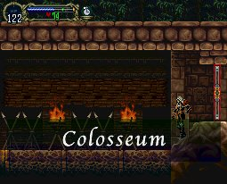
ด้านบนจะมีทางลับซ่อนอยู่บนเพดาน (WallSecret05)
ซึ่งสามารถใช้เวทย์อะไรก็ได้ทำลาย แต่ยังไม่สามารถปีนขึ้นไปได้
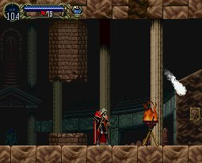
ด้านล่างจะเจอศัตรูที่เป็นโครงกระดูกสีเหลืองตัวใหญ่ (Paranthropus)
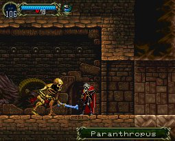
ซึ่งบางครั้งจะ Drop : Ring of Varda
ซึ่งดีมากๆ
แต่โอกาสได้ต่ำมากๆ เช่นเดียวกัน เพราะเป็น Bug
(แนะนำว่าควรไปเก็บในตอนหลังจะดีกว่า)
ด้านซ้ายล่างของโซนนี้จะมี Shield Rod
ซ่อนอยู่
แต่จะมี "ฝูง" ศัตรูเฝ้าเอาไว้
ไม่ว่าจะเป็น Armor Lord หรือ
Bone Musket (โครงกระดูกยิงปืน)
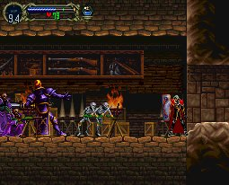
วิธีผ่าน ให้ยืนบริเวณทางเข้า (ที่เป็นพื้นสูง จะไม่โดนศัตรูโจมตี)
แล้วใช้ท่า "Soul Steal" ทำลายศัตรูชุดแรกบริเวณด้านหน้า
ส่วนศัตรูชุดหลัง Armor Lord
ให้ขว้าง Sub-Weapon
ไม่ว่าจะเป็น Holy Water หรือ "ปืน" (Agunea) ก็ได้
แต่ระหว่างนั้น ให้ถือโล่ห์ป้องกันกระสุนปืนด้วย
ด้านในสุดจะมี Shield Rod
* Note : Shield Rod มีพลังพิเศษซ่อนอยู่
คือ ต้องถือ Shield Rod ไว้ที่มือข้างหนึ่ง
และมืออีกข้างหนึ่ง ให้ถือโล่ห์ไว้ โล่ห์อะไรก็ได้
เมื่อกดปุ่ม โจมตี 2 ปุ่มพร้อมกัน
Shield Rod จะดึงพลังที่ซ่อนอยู่ในโล่ห์ออกมา
ซึ่งพลังนั้น จะแตกต่างกันไปตามโล่ห์ที่ถืออยู่
จากนั้นเข้าไปตรงกลางของโซนนี้ จะเจอกับ Richter ???
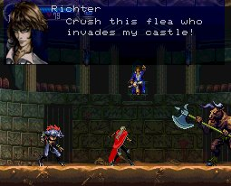
แต่เขากลับบอกว่า เขาเป็นเจ้าของปราสาทหลังนี้
และ Alucard เป็นผู้บุกรุก จึงเรียกลูกสมุนออกมาจัดการ
Boss : Minotaurus and Werewolf
Minotaurus
Level : 18
HP : 300
Exp : 400
Werewolf
Level : 18
HP : 260
Exp : 300
เมื่อปราบได้ ห้องด้านขวาจะมี Relic
: Form of Mist
ทำให้สามารถแปลงร่างเป็นหมอกได้
หมอก สามารถลอยผ่านลูกกรงได้ และหลบการโจมตีได้ทุกชนิด
ต่อไปให้กลับไปยังโซน Long Library
หากรีบสามารถใช้ประตูวาร์ปรูป "ม้า" หรือ Library
Card กลับไปได้
เมื่อไปถึง บริเวณก่อนเจอร้านค้า จะมีทางให้กระโดด 2 ชั้นขึ้นไปได้
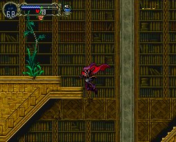
ด้านบนสุดจะมีทางลับ สามารถดันชั้นหนังสือผ่านเข้าไปได้ (WallSecret06)
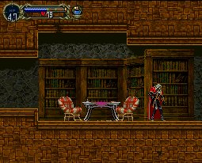
ด้านล่างสุดจะเจอบอส
Boss : Lesser Demon
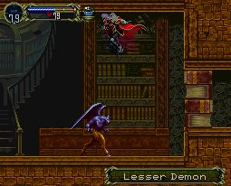
Level : 20
HP : 400
Exp : 100
Immune : Dark
Weak : Holy
ในระหว่างการต่อสู้ Lesser Demon จะเรียกปีศาจออกมาได้
และหนึ่งในนั้นคือ Mudman (No.
61)
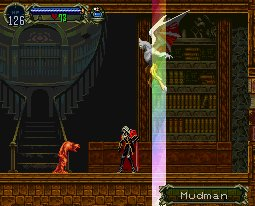
ซึ่ง Mudman จะเจอเฉพาะในตอนต่อสู้กับ Lesser Demon เท่านั้น
เพราะฉะนั้น หากจะเก็บสะสมรายชื่อของศัตรู
ก็ให้รอจนกว่า Lesser Demon จะเรียก Mudman ออกมา
จากนั้นลงไปด้านล่าง จะเจอลูกกรง
ให้แปลงร่างเป็นหมอกลอดผ่านไป
ด้านในจะเจอ Relic : Soul of Bat
ทำให้สามารถแปลงร่างเป็นค้างคาวได้
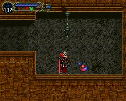
กลับออกมาที่บริเวณก่อนเจอร้านค้าอีกครั้ง
ด้านบนสุด ตอนนี้สามารถแปลงร่างเป็นค้างคาวบินขึ้นไปได้
ห้องด้านซ้ายจะมี Relic : Faerie
Card
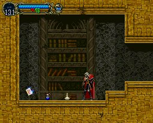
ซึ่งเมื่อได้มาแล้ว ต้องกดใช้
จะสามารถเรียก Faerie ออกมาช่วยเหลือได้
โดย Faerie เป็น Familar ชนิดหนึ่ง
ซึ่งสามารถเรียกใช้ Familar ได้ครั้งละ 1 ตัวเท่านั้น
จากนี้ เมื่อสามารถแปลงร่างเป็นค้างคาวได้แล้ว
จะสามารถบินไปที่ไหนในปราสาทก็ได้
ให้กลับไปเปิดแผนที่และเก็บ Item ที่เหลือให้ครบ
- กลับไปยังนาฬิกายักษ์
แปลงร่างเป็นค้างคาวบินขึ้นไป
ด้านขวาจะมี Relic : Gravity Boots
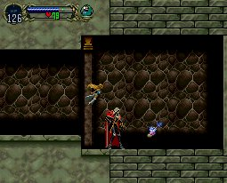
ทำให้สามารถทำ Super Jump ได้
โดยการกดปุ่ม "ล่าง" "บน + กระโดด"
- กลับไปยังโซน Colosseum
บริเวณ WallSecret05 จะสามารถขึ้นไปได้แล้ว
ด้านในจะมี Holy Sword
(หากเล่นในภาค Japan จะเจอ Familar : Nose Demon)
- กลับไปยังโซน Royal Chapel
ใช้ Super Jump หรือแปลงร่างเป็นค้างคาว
แล้วเก็บ Item กับเปิดแผนที่ให้หมด
- กลับไปยังโซน Alchemy Lab
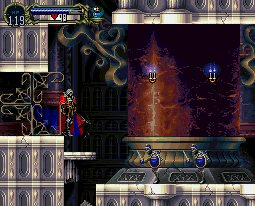
ด้านบนของห้องจะมีทางลับขึ้นไป จะมี Relic
: Skill of Wolf
- ด้านบนขวาของห้องที่เคยสู้กับ Boss
: Gaibon and Slogra
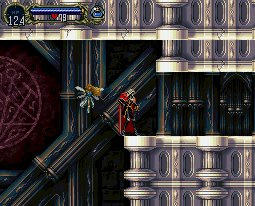
จะมี Relic : Bat Card
ทำให้เรียก "ค้าวคาว" ออกมาช่วยต่อสู้ได้
(ค้างคาวเป็น Familar เช่นเดียวกับ Faerie)
- ด้านหน้าโซน Entrance
ที่มีก้อนหินใหญ่ ด้านบนจะมีทางขึ้นไป Holy
Mail
- และบริเวณก้อนหินใหญ่
ให้แปลงร่างเป็นหมาป่า เดินเข้าจากทางซ้าย ออกไปทางขวา
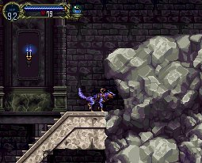
แล้วแปลงร่างเป็นค้างคาว บินกลับจากขวาไปออกทางซ้าย
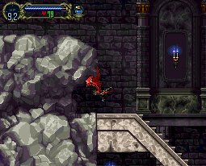
จะพบว่า กำแพงด้านซ้ายล่างของห้องเปิดออกแล้ว
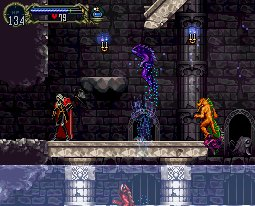
ด้านในจะมี Jewel Sword ซึ่งทำให้ศัตรูกลายเป็น
Jewel ได้
- ทางเข้าด้านหน้าของปราสาท ด้านบนจะมี Relic
: Power of Wolf
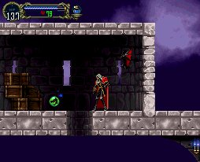
เมื่อเก็บของได้ครบหมดแล้ว ให้กลับไปยังโซน Olrox อีกครั้ง
Next
to Real Olrox
|